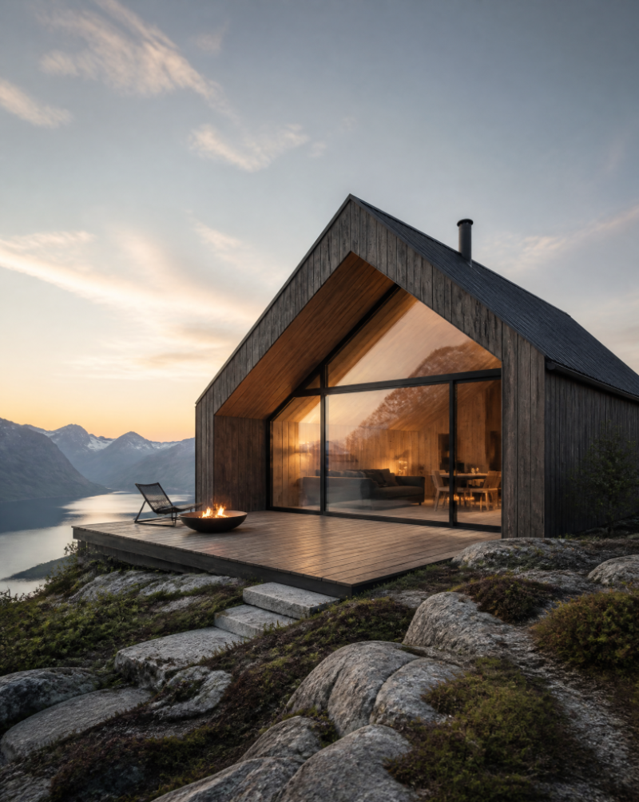

Cores, tipografia, componentes, layout e movimento extraídos da referência — o padrão de saída para tudo que o sistema gerar.
Camadas documentadas
Tipografia
Inter variável carrega toda a estrutura; Instrument Serif itálico entra uma única vez por página, como respiração. O letter-spacing:-0.035em global em h1/h2/h3 é o que dá a densidade de display — sem ele a escala parece genérica.
Título 1 · Display
3rem → 4.5rem → 6rem
leading 1.02 · tracking −0.035em
weight 600 · #2e3034
Título 1 · Acento serif
Instrument Serif · italic 400
tracking −0.01em
classe .font-serif-accent
Título 2 · Seção
2.25rem → 3rem
leading 1.25 · tracking −0.035em
weight 600
Título 3 · Card destaque
1.5rem → 1.875rem
weight 600 · tracking −0.035em
Título 4 · Card padrão
1.125rem / 1.75rem
weight 600
Eyebrow · Acento
Services
0.75rem / 1rem
weight 600 · tracking 0.1em
#e34a32
Eyebrow · Neutro
Trusted by product teams at
0.75rem / 1rem
weight 600 · tracking 0.1em
#8a8c91
Parágrafo · Lead
We embed with your team to scope, build, and launch AI features that make it past the demo.
1.125rem / 1.625
weight 400 · #55575c
measure max-w-xl (~36rem)
Parágrafo · Corpo
A clickable, model-connected prototype of your core workflow, ready for stakeholder testing.
0.875rem / 1.625
weight 400 · #55575c
Negrito M · Preço
$28k
2.25rem / 2.5rem · weight 600
Micro · Selo
Ships in 10 days Overlay
0.75rem · 0.625rem (overlay)
Nota de escala
A rampa usada é 0.75 · 0.875 · 1 · 1.125 · 1.5 · 1.875 · 2.25 · 3 · 3.75 · 4.5 · 6rem — razão ≈ 1.125–1.25 na faixa de texto (perto do Major Third) e ≈ 1.25 fixo nos degraus de display. Não é uma escala modular pura: os degraus de texto são deliberadamente comprimidos para caberem em cards densos, e a expansão só acontece a partir de 2.25rem. O que sustenta a hierarquia não é a razão, é o par tracking negativo + peso 600: em qualquer tamanho acima de 1.5rem o título já lê como display, mesmo sem ganhar corpo. Só seis degraus aparecem de fato na página inteira — restrição, não pobreza.
O serif itálico não é decoração: ele cria tensão editorial contra uma grotesca neutra e marca a única palavra que carrega a promessa do produto. Usado uma segunda vez, vira maneirismo.
Cores e superfícies
A paleta é quase monocromática: uma rampa de cinzas levemente azulados e um vermelho-terracota isolado. Sem cor secundária, sem paleta de apoio — o contraste vem de luminosidade e de sombra, não de matiz.
Base
#232427 · text-[#232427]
Cor do body. Nunca preto puro — 8% de luminosidade a mais tira a dureza sem perder contraste AAA.
Headline
#2e3034 · text-[#2e3034]
Um degrau mais claro que o corpo. Títulos grandes com peso 600 já pesam demais; clarear compensa a massa ótica.
Secundário
#55575c · text-[#55575c]
Todo corpo de texto de apoio. ~7:1 sobre branco — AAA.
Nav
#4b4d52 · text-[#4b4d52]
Exclusivo dos links da navegação.
Mudo
#8a8c91 · text-[#8a8c91]
Eyebrows neutras, legendas, placeholders. ~3.2:1 — só para texto ≥ 0.75rem com peso 600.
Branco
#ffffff · bg-white
Cards, nav, botão fantasma.
Areia
#f7f7f5 · bg-[#f7f7f5]
Selos e tiles. Único neutro quente da paleta clara.
Shell
#f4f5f5 · bg-[#f4f5f5]
Fundo do hero e das seções-cartão.
Página
#ecedee · bg-[#ecedee]
A camada mais funda. É ela que faz os cartões arredondados flutuarem.
Painel
#202024 · bg-[#202024]
Slot
#26262b · bg-[#26262b]
Card
#2c2c31 · bg-[#2c2c31]
Quatro degraus dentro de 10 pontos de luminosidade (#171719 → #202024 → #26262b → #2c2c31 → #34343a). Espaçamento assim apertado só funciona porque a separação real vem das sombras internas e do rgba(255,255,255,0.08) inset — a borda de 1px de luz que dá a cada painel a aparência de superfície física, não de retângulo pintado.
Primário
#e34a32 · bg-[#e34a32]
Eyebrows, ícones de lista, marca. Também é a cor do material 3D no hero.
Realce
#f05a3c · bg-[#f05a3c]
Topo dos gradientes e acento sobre fundo escuro.
Sombra
#c93a24 · to-[#c93a24]
Só existe como fim de gradiente. Nunca sólido.
Gradiente de acento
bg-gradient-to-br from-[#f05a3c] to-[#c93a24]
Pílula do hero, barra de estatística, ícone de destaque. Amplitude de matiz mínima (16°) — lê como luz sobre uma superfície, não como gradiente.
Gradiente neutro
bg-gradient-to-br from-[#2e3034] to-[#55575c]
Miniaturas e avatares dentro de chips claros.
Três radial-gradient em blur-3xl, cada um terminando em rgba(244,245,245,0) — a cor do próprio shell com alpha zero, e não transparent. É o detalhe que evita a franja acinzentada que aparece quando o navegador interpola em direção a preto transparente. O bloom quente e o frio ficam em cantos opostos: o calor puxa o olho para a direita, onde vive a geometria 3D.
Toda sombra da página segue a mesma fórmula de duas camadas: uma linha de luz de 1px por dentro + uma queda difusa com spread negativo. O spread negativo (-14px, -30px) puxa a sombra para debaixo do elemento, então ela nunca vaza pelas laterais — é o que faz um cartão parecer pousado, não recortado.
Nav
0 1px 0 rgba(255,255,255,.9) inset,
0 10px 30px -14px rgba(35,36,39,.25)
Card
0 1px 0 rgba(255,255,255,.9) inset,
0 14px 30px -18px rgba(35,36,39,.25)
Card · hover
0 24px 44px -18px rgba(35,36,39,.3)
Shell de seção
0 1px 0 rgba(255,255,255,.9) inset,
0 20px 60px -30px rgba(35,36,39,.25)
Shell escuro
0 1px 0 rgba(255,255,255,.08) inset,
0 30px 60px -30px rgba(23,23,25,.8)
Glow de acento
0 12px 24px -8px rgba(227,74,50,.8)
Note que o inset muda de valor conforme o fundo: rgba(255,255,255,0.9) sobre claro, 0.25 em botões escuros, 0.08 em painéis pretos. É a mesma ideia física — luz caindo de cima — recalibrada para cada superfície.
Componentes
Só existem duas famílias de forma: rounded-full para o que se clica e rounded-3xl/[26–40px] para o que se lê. Nenhum canto vivo em toda a página.
Primário · sólido
px-7 py-3.5 · text-sm/500 · rounded-full
transition-all duration-300 · hover:-translate-y-0.5
Secundário · fantasma
border-white · bg-white
a borda branca sobre fundo #f4f5f5 é o que define a silhueta
Compacto e sobre escuro
A seta do botão compacto entra da esquerda:
opacity-0 -ml-4 → group-hover:opacity-100 group-hover:ml-0
Badge de hero usa bg-white/70 + backdrop-blur — precisa ficar legível por cima dos blooms em movimento.
A clickable, model-connected prototype of your core workflow, ready for stakeholder testing.
Ships in 10 days3×
faster
Median time from idea to shipped.
Prototype Sprint
One workflow
$9k
Launch Sprint
Most booked$28k
Card em destaque: lg:scale-[1.04] + inset 0.15 em vez de 0.08.
“We don't just ship models. We ship systems that still work a year later.”

Lena Kort, Studio LeadDefault
Focus
Disabled
O input compartilha a mesma sombra do card — inset de luz + queda curta. Nada de borda cinza: a borda é branca e some no branco do próprio campo; o contorno percebido vem da sombra.
Layout
A página inteira é um shell de px-2 sm:px-4 pt-2 sm:pt-4 sobre #ecedee. Cada seção é um bloco arredondado flutuando dentro dele — a margem de 8/16px que sobra nas bordas é o que dá a leitura de “aplicativo”, não de site.
Ritmo base 4px, mas o uso real se concentra em três faixas: micro (2–3) para gaps de ícone, componente (5–7) para padding de card, seção (16–32) para respiro vertical. O salto de 7 para 16 é proposital — não existe espaçamento “médio”, o que impede que blocos vizinhos fiquem ambiguamente relacionados.
Services
Six focused delivery lanes. Each one arrives as a working artifact inside your stack.
A private assistant grounded in your docs, tools, and data.
Triage, drafting, and resolution flows with human review built in.
Natural-language querying over your warehouse, with guardrails.
Seção: px-6 py-24 sm:px-10 lg:px-16 lg:py-32 · Grid: grid gap-5 sm:grid-cols-2 lg:grid-cols-3 · Bloco de texto: max-w-xl
One continuous loop of detailed briefs, prototypes, and walkthroughs.
3×
faster
Median time from idea to shipped.
Shell escuro: rounded-[36px] p-4 sm:p-5 — o padding pequeno cria uma moldura fina, não uma margem. Grid: lg:grid-cols-3 com o painel principal em lg:col-span-2.
2
Live demos per sprint
14
Days to launch-ready
100%
Handed over
Sample metrics shown for illustration.
Rotação de ±1° + lg:-space-x-6 + lg:scale-105 no centro. Um grau é quase invisível conscientemente, mas quebra a rigidez do grid — é o truque de “objeto físico sobre mesa”.
Larguras de leitura
max-w-md · 28rem — corpo em card escuromax-w-lg · 32rem — formuláriomax-w-xl · 36rem — lead de seçãomax-w-2xl · 42rem — cabeçalho centradomax-w-3xl · 48rem — headline de CTAmax-w-5xl · 64rem — bloco do heromax-w-[880px] — pílula da navBreakpoints
sm · 640px — grid 2 col, raios e paddings crescemmd · 768px — nav desktop aparecelg · 1024px — grid 3 col, tiles flutuantes, rotaçõesxl · 1280pxTodo enfeite (tiles, rotação, sobreposição, chip de preview) está atrás de lg:. No mobile o sistema é uma pilha limpa de cartões.
Motion
O sistema inteiro usa uma única curva: ease-out — cubic-bezier(0,0,0.2,1). Elementos entram rápido e desaceleram até parar, como massa desacelerando por atrito. Não há um ease-in em toda a página; nada nunca ganha velocidade ao sair de cena, porque isso leria como algo caindo, não pousando.
Rise-in [data-rise]
opacity-0 translate-y-4 →
transition-all duration-700 ease-out
Estado inicial nas classes, remoção no evento load. Deslocamento de apenas 1rem — sugere o elemento assentando, não voando.
Coreografia escalonada
delay-150 · delay-300 · delay-500 · delay-700
Quatro degraus de atraso, com intervalos crescentes (150 → 150 → 200 → 200ms). O espaçamento irregular impede que a sequência soe como metrônomo.
Drift [data-drift]
rAF · translateY(sin(t+i·2)·6px)
rotate(base + sin(t·0.7+i·2)·2deg)
Senoides com frequências e fases diferentes por tile — o desalinhamento é o ponto: sincronizados, virariam um carrossel.
Elevação em hover
hover:-translate-y-1 · duration-300
shadow 14/30/-18 → 24/44/-18
Translação e sombra crescem juntas. Mover sem crescer a sombra parece deslizar; crescer a sombra sem mover parece um bug.
Seta que revela
opacity-0 -ml-4 → group-hover:opacity-100 group-hover:ml-0
transition-all duration-300
O botão ganha largura no hover. Animar margin-left em vez de transform é deliberado: a pílula precisa esticar.
Parallax do bloom
pointermove → translate(±24px, ±24px)
transition-transform duration-700 ease-out
700ms de transição sobre um evento contínuo cria arrasto: a luz segue o cursor com preguiça, como fluido.
Peso variável por proximidade .wchar
font-variation-settings:'wght' N
transition .15s linear
h1 e h2 são divididos caractere a caractere; cada letra ganha peso pela distância ao cursor. Único uso de linear na página — aqui a resposta precisa ser direta, não amortecida.
Sombra da nav no scroll
scrollY > 24 → 0 18px 44px -14px rgba(35,36,39,.4)
transition-shadow duration-500
Só a sombra muda — nem cor, nem tamanho, nem posição. A nav não “aparece”, ela só se descola da página.
Malha 3D #meshGL
THREE.IcosahedronGeometry(3, 0) · flatShading
color #e34a32 · emissive #7a2012 · rough .3 · metal .6
rot.x = t·0.2 · rot.y = t·0.3 · bob sin(t·1.2)·0.4
Detalhe zero no icosaedro: as faces planas viram blocos de cor chapada, não uma esfera renderizada. Duas luzes — branca principal e uma de preenchimento #f05a3c — mantêm até a face mais escura dentro da paleta.
Durações
150ms
peso variável — resposta direta
300ms
hover de botão e card
500ms
sombra da nav
700ms
entrada e parallax
As durações escalam com a distância percorrida, não com a importância do elemento: quanto maior o deslocamento, mais lento. É o que mantém a velocidade aparente constante por toda a página. E prefers-reduced-motion desliga o drift, o parallax e a malha 3D na origem — não apenas encurta.
Iconografia
Um único set — Lucide via lucide.createIcons(). Nenhum ícone tem cor própria: todos herdam do container. O traço nunca muda de 1.5, mesmo quando o ícone cresce, e é isso que impede que um ícone de 32px pareça pesado ao lado de um de 14px.
bg-[#f7f7f5] text-[#e34a32]
Card claro
bg-[#e34a32] text-white
Métrica
bg-[#2c2c31] text-[#f05a3c]
Painel escuro
gradiente neutro · text-white
Chip
Dois círculos h-6 w-6 sobrepostos em left-0 / left-3.5 dentro de um container w-9.
Zero SVG. A marca é a paleta inteira em dois discos — o neutro escuro e o acento — com o quente sobreposto ao frio. Reproduz-se em qualquer tamanho e em qualquer stack, e diz exatamente o que o sistema de cores diz.